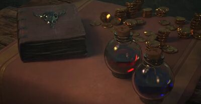

Un objeto es un artefacto u artículo de la historia de Runaterra y se presenta en el juego como mejoras para los campeones y sus habilidades.
Un campeón solo puede llevar seis objetos y una baratija a la vez, lo que hace que la selección de objetos sea una parte importante para lograr la victoria. Los objetos solo se pueden obtener a través de la tienda ubicada en la base (y a través de Forja Viviente Forja Viviente de Ornn Ornn en todas partes del mapa). Aquí también se venden objetos por el 70% del total oro gastado para obtenerlos. Algunos artículos se venden por 40% de su costo total.

Categorías
Objetos iniciales: incluye objetos que se pueden obtener con el oro inicial, adecuados para la fase de carriles o junglas
Herramientas: Incluye consumibles y baratijas
Defensa: incluye objetos que otorgan estadísticas como vida, armadura o resistencia mágica.
Ataque: incluye objetos que otorgan estadísticas como daño de ataque, velocidad de ataque o probabilidad de golpe crítico.
Magia: incluye objetos que otorgan estadísticas como poder de habilidad, maná o reducción de enfriamiento.
Movimiento: incluye objetos que otorgan velocidad de movimiento mejorada.